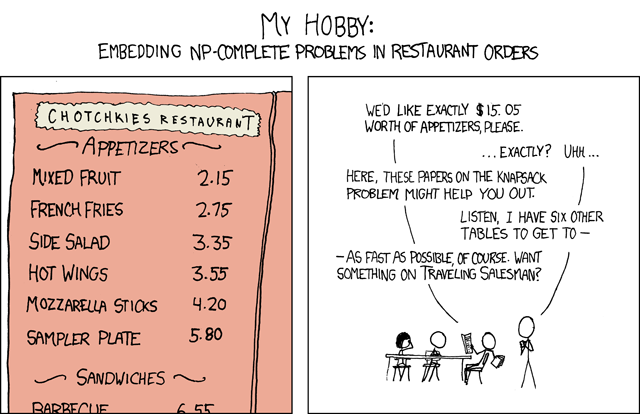

Обчислювальна складність — це галузь теорії обчислень, що вивчає кількість ресурсів (часу, пам'яті), необхідних для виконання алгоритмів. Вона дозволяє оцінити ефективність алгоритмів та передбачити їхню поведінку при зростанні обсягу вхідних даних.
Основним інструментом аналізу складності є асимптотичні позначення, серед яких найважливішим є "О-велике" (Big O notation).
О-велике — це математичне позначення, що описує асимптотичну поведінку функції. В інформатиці воно використовується для класифікації алгоритмів за часом їх виконання або обсягом пам'яті, що вони використовують, у залежності від розміру вхідних даних.
Формально, кажуть, що функція f(n) є O(g(n)), якщо існують такі додатні константи c та n₀, що для всіх n ≥ n₀ виконується нерівність f(n) ≤ c·g(n).
Це означає, що f(n) зростає не швидше, ніж g(n), з точністю до постійного множника.
Аналіз складності дозволяє:
Наприклад, алгоритм зі складністю O(n³) може бути прийнятним для n=100, але стає непрактичним для n=1000, оскільки час виконання зросте в 1000 разів.
Виберіть правильну відповідь для кожного питання. Після завершення натисніть "Перевірити відповіді".
Ваш результат: 0 з 0
О-нотація показує, як росте час виконання конкретного алгоритму. Але є задачі, для яких взагалі не відомо жодного швидкого алгоритму — і питання "чи існує він у принципі" є одним з найважливіших відкритих питань математики. Щоб говорити про це точно, задачі групують у класи складності.
Класи P, NP, co-NP, NP-hard, NP-complete визначаються для задач із відповіддю "так/ні" (задачі рішення). Наприклад, замість "знайти найкоротший маршрут" беруть "чи існує маршрут довжиною ≤ K?". Будь-яку оптимізаційну задачу легко звести до такої: якщо вмієш швидко відповідати на питання "так/ні" для будь-якого K, то бінарним пошуком по K знаходиш і оптимум.
P (Polynomial) — множина задач, які можна розв'язати за час, що є поліномом від розміру входу n (O(n), O(n²), O(n³)...) на звичайному, "детермінованому" комп'ютері. Це задачі, які практично здійсненні навіть для великих n.
Приклади: сортування масиву, пошук найкоротшого шляху в графі (Дейкстра), перевірка, чи число просте, 2-SAT, знаходження максимального потоку.
Детермінована машина Тьюринга (ДМТ) — це формальна модель звичайного комп'ютера: у кожен момент часу вона перебуває в одному стані і робить рівно один можливий наступний крок. Це модель, якою ми реально можемо скористатись.
Недетермінована машина Тьюринга (НМТ) — уявна, гіпотетична модель. Якщо в якомусь стані можливо кілька наступних кроків, вона ніби виконує всі їх одночасно, розгалужуючись на паралельні "гілки" обчислення. Формула приймається, якщо хоча б одна з експоненційно багатьох гілок призводить до відповіді "так".
Якщо на кожному з n кроків машина може розгалужуватись, скажімо, надвоє, то загальна кількість гілок росте як 2ⁿ — тобто експоненційно. Жоден реальний комп'ютер так не працює (паралелізм НМТ не можна побудувати фізично для довільної задачі) — це чисто теоретичний інструмент для класифікації складності.
NP (Nondeterministic Polynomial) означає не "недетермінований поліном", а множину задач, які недетермінована машина Тьюринга розв'язує за поліноміальний час. Еквівалентне і набагато практичніше формулювання: NP — це задачі, для яких дане "так"-рішення (сертифікат, підказку) можна перевірити за поліноміальний час на звичайному комп'ютері.
Приклад: чи має граф гамільтонів цикл? Знайти такий цикл самостійно може бути дуже довго. Але якщо хтось вам дав послідовність вершин — перевірити, що це справді гамільтонів цикл, займає лінійний час O(n). Тому задача в NP.
Звідси одразу видно: P ⊆ NP. Якщо задачу можна швидко розв'язати, то її "так"-відповідь можна і швидко перевірити (просто розв'яжи заново). Чи навпаки, чи P = NP — це і є знаменита відкрита проблема P vs NP (одна з 7 "задач тисячоліття" Математичного інституту Клея, $1 000 000 призу).
co-NP — це клас задач, заперечення яких лежить у NP. Простіше: NP зручний для перевірки відповіді "так" (достатньо одного сертифіката-свідка). co-NP зручний для перевірки відповіді "ні".
Приклад: "чи граф НЕ 3-розфарбовуваний?" — щоб довести "так, не розфарбовується", довести це одним маленьким прикладом складно (треба виключити взагалі всі варіанти розфарбування). А от "граф 3-розфарбовуваний" (NP) — досить пред'явити одну вдалу розфарбовку.
Класичний приклад задачі з co-NP: перевірка, що булева формула є тавтологією (істинна за будь-яких значень змінних) — заперечення цього ("існує набір значень, при якому формула хибна") це майже SAT, тобто NP-повна задача.
Невідомо, чи NP = co-NP (це теж відкрите питання, тісно пов'язане з P vs NP). Якщо P = NP, то автоматично і P = NP = co-NP, бо клас P замкнений відносно заперечення (якщо можеш швидко перевірити "так", можеш і швидко перевірити "ні" — просто інвертуй відповідь).
Задача X є NP-важкою, якщо будь-яку задачу з NP можна звести до X за поліноміальний час (поліноміальне зведення, "Karp reduction"). Неформально: якби ви навчились швидко розв'язувати X, ви б автоматично отримали швидкий розв'язок для усіх задач з NP. X — "не легша" за найважчі задачі NP.
Важливий нюанс: NP-важка задача не зобов'язана сама належати до NP. Вона може бути ще важчою — наприклад, взагалі не мати сертифіката, який перевіряється швидко (оптимізаційні версії задач, або навіть нерозв'язні задачі на кшталт проблеми зупинки).
Задача є NP-повною, якщо вона одночасно (1) належить до NP і (2) є NP-важкою. Тобто це "найважчі" представники класу NP: якщо хоч одну NP-повну задачу вдасться розв'язати за поліноміальний час — усі задачі з NP теж розв'яжуться за поліноміальний час, а отже P = NP.
Теорема Кука — Левіна (1971) показала, що задача 3-SAT є NP-повною — вона стала першою доведеною NP-повною задачею й "еталоном", до якого зводять усі інші. Відтоді тисячі задач (включно з усіма прикладами на вкладці "Приклади задач") доведені NP-повними шляхом зведення до 3-SAT або одна до одної (ланцюжок зведень).
Саме тому NP-повнота така потужна концепція: досить один раз довести NP-повноту нової задачі через зведення з уже відомої — і одразу відомо, що вона так само "важка", як і всі інші.
Ключові включення (за умови, що P ≠ NP, у що вірить більшість дослідників, хоч це і не доведено):
Усі задачі нижче — NP-повні: (1) відповідь "так" легко перевірити за поліноміальний час, (2) до кожної з них можна поліноміально звести 3-SAT (або іншу вже доведену NP-повну задачу), тому всі вони однаково "найважчі" в класі NP.
Суть: дана логічна формула, що складається з блоків по три змінні в кожному, з'єднаних через "або" й "і" (наприклад: (A∨¬B∨C) ∧ (¬A∨D∨E) ∧ ...). Чи існує такий набір значень "істина/хибність" для всіх змінних, щоб уся формула стала істинною?
Чому важлива: перша задача, для якої офіційно доведена NP-повнота (теорема Кука — Левіна). Усі інші NP-повні задачі доводяться через зведення до неї.
Застосування: перевірка коректності мікросхем, верифікація софту, штучний інтелект.
Суть: чи можна розфарбувати вершини графа в K кольорів так, щоб жодне ребро не з'єднувало вершини одного кольору?
Метафора: розклад іспитів. Вершини — предмети, ребра — спільні студенти. Заданій мінімальній кількості "кольорів" (часових слотів) відповідає розклад без конфліктів.
Застосування: розподіл частот для веж стільникового зв'язку, розподіл регістрів у процесорі.
Нюанс: для K=2 (двокольорова розфарбовуваність) задача насправді в P — достатньо перевірити, чи граф двочастковий. NP-повнота починається з K≥3.
Два "дзеркальних" брати-близнюки з теорії графів:
Кліка: знайти в графі групу з K вершин, де кожна з'єднана з кожною (у соцмережі — компанія людей, де всі знайомі одне з одним).
Незалежна множина: знайти групу з K вершин, де жодна не з'єднана з іншою (у соцмережі — компанія незнайомців).
Застосування: аналіз соціальних мереж, пошук комплексів білків у біоінформатиці.
Суть: є генеральна множина елементів і набір "підмножин". Чи можна вибрати не більше K підмножин так, щоб їхнє об'єднання містило абсолютно всі елементи?
Метафора: розміщення пожежних станцій. Є список районів міста (елементи) і можливі місця для станцій, кожна з яких покриває 3-4 райони (підмножини). Треба накрити все місто мінімальною кількістю станцій.
Застосування: логістика, найм співробітників із перетинними навичками для покриття проєкту.
Суть: є предмети різних розмірів і стандартні контейнери фіксованої ємності. Чи можна упакувати всі предмети в K контейнерів?
Метафора: завантаження вантажівок або розкладання файлів по флешках.
Застосування: хмарні обчислення (розміщення віртуальних машин на фізичних серверах), розкрій матеріалів у виробництві (метал, тканина, дерево).
Суть: розділити вершини графа на дві групи так, щоб кількість ребер між цими групами була максимальною (принаймні K).
Застосування: розводка друкованих плат (щоб провідники менше наводили завади одне одному), статистична фізика (модель Ізінга для магнетиків).
Суть: спрощена версія задачі про рюкзак. Дано множину чисел. Чи існує серед них така підмножина, сума елементів якої точно дорівнює заданому числу T?
Застосування: взаєморозрахунки, складання точних фінансових транзакцій, криптографія (ранні алгоритми на основі рюкзака).
Нюанс: існує "псевдополіноміальний" алгоритм через динамічне програмування, що працює за O(n·T). Це не суперечить NP-повноті, бо T може бути експоненційно великим відносно довжини свого запису в бітах.
Частина 1 — квіз на розуміння теорії. Частина 2 — розкладіть задачі по правильних класах.
Ваш результат: 0 з 0
